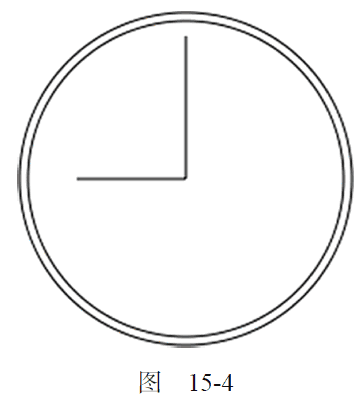

15.2.3 绘制路径
2D 绘制上下文支持很多在画布上绘制路径的方法。通过路径可以创造出复杂的形状和线条。要绘制路径，首先必须调用beginPath()方法，表示要开始绘制新路径。然后，再通过调用下列方法来实际地绘制路径。
-
arc(x, y, radius, startAngle, endAngle, counterclockwise)：以(x,y)为圆心绘制一条弧线，弧线半径为radius，起始和结束角度（用弧度表示）分别为startAngle 和endAngle。最后一个参数表示startAngle 和endAngle 是否按逆时针方向计算，值为false表示按顺时针方向计算。
-
arcTo(x1, y1, x2, y2, radius)：从上一点开始绘制一条弧线，到(x2,y2)为止，并且以给定的半径radius 穿过(x1,y1)。
-
bezierCurveTo(c1x, c1y, c2x, c2y, x, y)：从上一点开始绘制一条曲线，到(x,y)为止，并且以(c1x,c1y)和(c2x,c2y)为控制点。
-
lineTo(x, y)：从上一点开始绘制一条直线，到(x,y)为止。
-
moveTo(x, y)：将绘图游标移动到(x,y)，不画线。
-
quadraticCurveTo(cx, cy, x, y)：从上一点开始绘制一条二次曲线，到(x,y)为止，并且以(cx,cy)作为控制点。
-
rect(x, y, width, height)：从点(x,y)开始绘制一个矩形，宽度和高度分别由width 和height 指定。这个方法绘制的是矩形路径，而不是strokeRect()和fillRect()所绘制的独立的形状。
创建了路径后，接下来有几种可能的选择。如果想绘制一条连接到路径起点的线条，可以调用closePath()。如果路径已经完成，你想用fillStyle 填充它，可以调用fill()方法。另外，还可以调用stroke()方法对路径描边，描边使用的是strokeStyle。最后还可以调用clip()，这个方法可以在路径上创建一个剪切区域。
图 15-3
下面看一个例子，即绘制一个不带数字的时钟表盘。
var drawing = document.getElementById("drawing");
//确定浏览器支持<canvas>元素
if (drawing.getContext) {
var context = drawing.getContext("2d");
//开始路径
context.beginPath();
//绘制外圆
context.arc(100, 100, 99, 0, 2 * Math.PI, false);
//绘制内圆
context.moveTo(194, 100);
context.arc(100, 100, 94, 0, 2 * Math.PI, false);
//绘制分针
context.moveTo(100, 100);
context.lineTo(100, 15);
//绘制时针
context.moveTo(100, 100);
context.lineTo(35, 100);
//描边路径
context.stroke();
}
运行一下
这个例子使用arc()方法绘制了两个圆形：一个外圆和一个内圆，构成了表盘的边框。外圆的半径是99 像素，圆心位于点(100,100)，也是画布的中心点。为了绘制一个完整的圆形，我们从0 弧度开始，绘制2π 弧度（通过Math.PI 来计算）。在绘制内圆之前，必须把路径移动到内圆上的某一点，以避免绘制出多余的线条。第二次调用arc()使用了小一点的半径，以便创造边框的效果。然后，组合使用moveTo()和lineTo()方法来绘制时针和分针。最后一步是调用stroke()方法，这样才能把图形绘制到画布上，如图15-4 所示。

在2D 绘图上下文中，路径是一种主要的绘图方式，因为路径能为要绘制的图形提供更多控制。由于路径的使用很频繁，所以就有了一个名为isPointInPath()的方法。这个方法接收x 和y 坐标作为参数，用于在路径被关闭之前确定画布上的某一点是否位于路径上，例如：
if (context.isPointInPath(100, 100)){
alert("Point (100, 100) is in the path.");
}
2D 上下文中的路径API 已经非常稳定，可以利用它们结合不同的填充和描边样式，绘制出非常复杂的图形来。